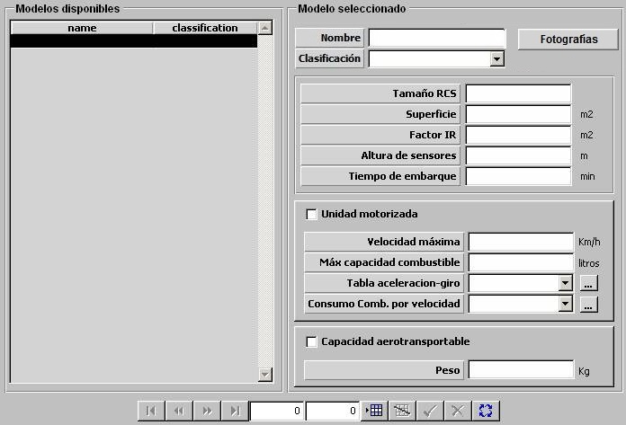

Plataformas Terrestres

Descripción de los parámetros:
Fotografías: Pulsando este botón se accede a la ventana de Fotografías desde la que se pueden incluir varias fotografías de una plataforma, asociadas a distintos niveles de reconocimiento. Durante la ejecución del ejercicio, cuando se sitúe el Hook en una detección, dependiendo del nivel de reconocimiento de la misma se mostrará una de estas fotografías.
Para las plataformas terrestres se consideran 4 niveles de reconocimiento por lo que se podrán incluir hasta 4 fotografías.

En esta ventana pulsando en los botones Nivel 1 (2,3 ó 4) se accede al navegador desde el que se puede buscar y cargar una imagen.
Los botones Nivel 5 y Nivel 6 no están accesibles para las plataformas aéreas.
Pulsando el botón Aceptar se cierra la ventana y se guardan en memoria todas las imágenes cargadas hasta que finalmente se acepten o rechacen los datos de la plataforma en edición.
Tamaño RCS: Este parámetro es tenido en cuenta el modelo de radar para calcular la distancia a la que esta plataforma es detectada.
Unidades: m2
Rango: 0 – 9999
Superficie: Este parámetro es tenido en cuenta el modelo de visual para calcular la distancia a la que esta plataforma es detectada.
Unidades: m2
Rango: 0 – 999
Factor IR: Factor que modela la variación de Tamaño IR de la plataforma con el "Aspecto" (dado por el ángulo alfa = rumbo del contacto - marcación del contacto).
Unidades: Tanto por uno
Rango: 0,0 – 1,0
Ejemplo:
Si Factor IR = 0 ⇒ Tamaño IR = Tamaño IR · seno (alfa).
Si Factor IR = 0,25 ⇒ Tamaño IR = Tamaño IR ( 0,25 + 0,75 · seno (alfa) ).
Si Factor IR = 1 ⇒ Tamaño IR no cambia con Aspecto.
Altura Sensores: Altura de instalación de los sensores en la plataforma. Este parámetro influye en los modelos de sensores, tanto para determinar el alcance de los sensores propios como para determinar el alcance al que es detectada esta plataforma por sensores de otras unidades.
Unidades: metros
Rango: 0 – 999
Tiempo de Embarque: Tiempo requerido para que la unidad terrestre complete una maniobra de embarco o desembarco (tanto en unidades de superficie como cuando es aerotransportada).
Unidades: minutos
Rango: 0 – 999
Unidad Motorizada: Determina si la plataforma es móvil.
Velocidad Máxima: Este parámetro es tenido en cuenta por el modelo de dinámica como límite superior de velocidad para la plataforma.
Unidades: kilómetros / hora
Rango: 0 – 999
Máxima Capacidad Combustible: Este parámetro es tenido en cuenta por el modelo de dinámica en la simulación de consumos y recargas de combustibles. El tanto por ciento de combustible inicial de una unidad se calcula sobre este valor.
Unidades: litros
Rango: 0 – 9999
Tabla Aceleración-Giro: Ver apartado Aceleración y Giro de Terrestres.
Consumo de Combustible por Velocidad: Ver apartado Consumo de Combustible de Superficies y Submarinos.
Capacidad Aerotransportable: Determina si la plataforma tiene de ser transportada por helicóptero que tenga la Capacidad de Transporte.
Peso: Peso que debe ser incrementado a la unidad helicóptero, cuando transporta a esta plataforma.
Unidades: kilogramos
Rango: 0 – 999